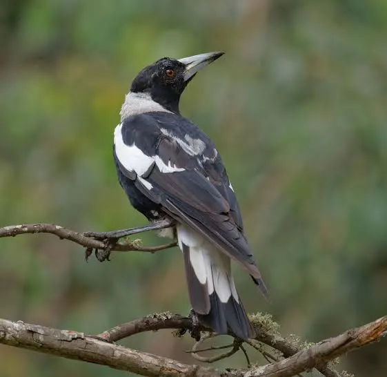
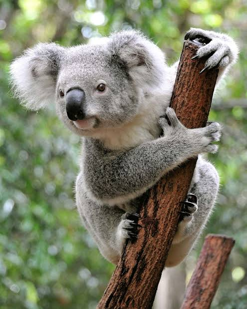
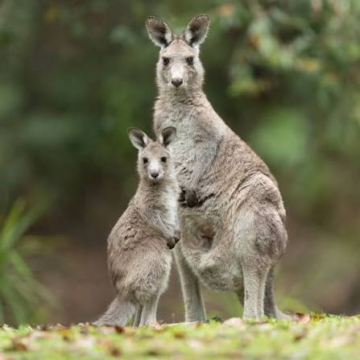

01
Geography
Wildlife Observations Are Uneven Across Australia
Observation records vary strongly by state and territory. New South Wales stands out with the highest total, while smaller or more remote jurisdictions record far fewer sightings.
New South Wales records the highest total, with 587,435 observations, substantially more than any other jurisdiction.
Highest total: 587,435 observations
Lowest total: 2,475 observations
Observation counts represent selected Australian wildlife species recorded between 2021 and 2025.
02
Observation locations
Where Do Wildlife Encounters Cluster?
Wildlife observation records are heavily concentrated along Australia’s eastern and south eastern regions. Use the wildlife group selector to explore how the distribution of mammals, birds, reptiles and amphibians differs across Australia.
Observation locations are concentrated along Australia’s eastern and south eastern coasts across wildlife groups, although the density and spread of records vary between mammals, birds, reptiles and amphibians. Inland Australia remains comparatively sparse.
Sampled observations cluster strongly along the east and south east coasts.
Far fewer sampled observations appear across the central interior.
Each point represents one sampled wildlife observation from 2021–2025.
03
Species
Which Wildlife Is Seen Most Often?
Comparing total observations reveals which selected species dominate the wildlife record.
Australian Magpie is by far the most observed selected species at about 817k records, over three times the Koala total.
Top observed species

Australian Magpie
Group: Bird
Observations: 817,000+
Most recorded species by a large margin.

Koala
Group: Mammal
Observations: 232,000+
Second highest observed species in the dataset.

Eastern Grey Kangaroo
Group: Mammal
Observations: 76,000+
Ranks third, but far below the top two species.
04
Concentration
A Few Species Dominate the Records
Ranking species by total observations shows whether wildlife records are broadly distributed across species or concentrated among only a few.
Australian Magpie alone contributes roughly two-thirds of all selected observations, while Australian Magpie and Koala together account for close to 90%. This shows that the observation records are highly concentrated among only a few species rather than being evenly distributed. Most of the remaining species contribute only a small share of the total, creating a clear long tail pattern.
Bars show species observation counts, while the line shows the cumulative share of all selected observations.
05
State comparison
Every State Tells a Different Story
States differ not only in how many wildlife observations they record, but also in which wildlife groups contribute most to those totals.
Birds make up the largest share of observations in most states and territories. New South Wales stands out as the most balanced jurisdiction, where mammals account for 48% of observations and birds 45%, while several other jurisdictions are overwhelmingly dominated by bird records.
Darker cells indicate a larger share of observations within each state or territory. Each row sums to 100%, showing how bird, mammal, reptile and amphibian records contribute to that jurisdiction’s total.
06
Composition
What Wildlife Dominates Each State?
Looking beyond total observation counts reveals how the mix of birds, mammals, reptiles and amphibians differs between jurisdictions.
Bird observations dominate most jurisdictions, especially Western Australia, Tasmania and the Northern Territory. New South Wales stands out as the most balanced state, with mammals contributing almost as much as birds.
Each bar represents 100% of selected wildlife observations within a state or territory.
07
Time
Wildlife Has a Calendar
Observation activity changes throughout the year rather than remaining constant. Records stay relatively stable across most months before increasing sharply in spring, revealing a pronounced seasonal peak in October.
Observation activity remains relatively stable through most of the year before rising sharply from September and reaching its annual peak in October at about 165.7k observations. Activity then falls through November and December, creating a distinct spring peak rather than a gradual year round increase.
08
Seasonality
Different Wildlife, Different Seasons
Wildlife groups follow different seasonal patterns throughout the year. Changes in the width of each band reveal when particular groups become more prominent in observation records.
Bird observations remain the dominant component throughout most of the year, but the seasonal mix changes noticeably in spring. Mammal observations rise sharply from September and peak in October–November, temporarily narrowing the gap with birds, while reptiles and amphibians remain comparatively small contributors across all months.
Band thickness represents the relative monthly observation activity of each wildlife group. Wider bands indicate months when that group contributes more strongly to recorded observations.
09
Species seasonality
When Does Each Species Appear Most?
Seasonal patterns become clearer at the species level. Some animals are recorded relatively consistently throughout the year, while others show stronger peaks in particular months.
Koala observations peak strongly in October and November, while Australian Magpie records remain relatively consistent throughout the year. Eastern Brown Snake shows a much stronger seasonal cycle, with high activity early in the year and again from spring into early summer, separated by a pronounced winter lull.
Bubble size shows each month relative to that species’ busiest month. Colour identifies the wildlife group; exact observation counts are available on hover.
10
Change
What Changed Over Five Years?
Comparing 2021 with 2025 reveals which selected species increased or decreased in observation frequency. Showing percentage change makes differences easier to compare across species with very different total counts.
Change varies sharply across species. Striped Marsh Frog shows the largest increase at about +60%, while Common Wombat records the steepest decline at about −49%. Australian Magpie remains dominant overall but changes relatively little at around +4%.
Bars show the percentage change in observation records from 2021 to 2025. Positive values indicate an increase, while negative values indicate a decrease.
11
Long term pattern
What Changed Between 2021 and 2025?
Percentage change shows where species ended up, but not what happened along the way. Annual rankings reveal whether their relative positions stayed stable or shifted between 2021 and 2025.
Australian Magpie, Koala and Eastern Grey Kangaroo remain fixed in the top three positions throughout 2021–2025. The only notable ranking change occurs between Eastern Blue-tongued Lizard and Common Wombat, which swap 4th and 5th place in 2023–2024 before returning to their original order in 2025.
Click a species to trace its ranking · Double-click to reset · Hover for details
Each line tracks a species’ rank position by year, with Rank 1 representing the most observed species.
12
Conservation
Protection Looks Different Across Australia
A large protected area does not always mean a large share of a jurisdiction is protected. Comparing both measures reveals very different conservation profiles across Australia.
Western Australia has by far the largest total protected area, but the ACT protects the greatest share of its jurisdiction despite its very small land area. Tasmania also stands out for protecting a relatively large proportion of its land, showing that total protected area and percentage protected can tell very different conservation stories.
Circle size represents total protected area, while colour represents the percentage of each jurisdiction that is protected. Larger circles therefore indicate more protected land, while darker circles indicate a greater protected share.
FINAL TAKEAWAY
What Does This Mean?
Wildlife observations reflect more than where animals occur — they are also shaped by where, when and what people record.
Recognising these patterns helps reveal gaps in observation coverage and encourages wildlife records to be interpreted with greater context.